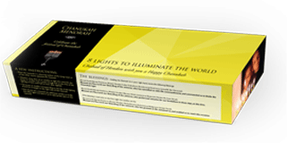

8 candles to illuminate the world
Chanukah, the Festival of Lights, celebrates the miraculous victory of the few over the many, of the weak over the mighty, of the righteous over the wicked. But the miracle didn’t stop there. In the Temple, the Maccabees found only a single jug of olive oil that had escaped contamination by the Greeks; Miraculously, this one-day supply burned for eight days. That is why Chanukah, which lasts eights days and commemorates the rededication of the Temple through the lighting of the Menorah, is called the “Festival of Lights”.Light is a central theme in the Torah and throughout Judaism. We kindle the lights of the menorah after nightfall indicating that a small flame can dispel the surrounding darkness.
Chanukah lights convey wonderful messages of eternal significance. In the same way as the Menorah is lit so that its light can be seen from the outside, so too our efforts to bring in our homes the light and warmth of the Torah must illuminate the world out there. As we light the Menorah, adding a new candle each night, one on the first night, two on the second night and so on, so too must we strive, each passing day, to bring more warmth and light to the world, through Torah and Mitzvot.